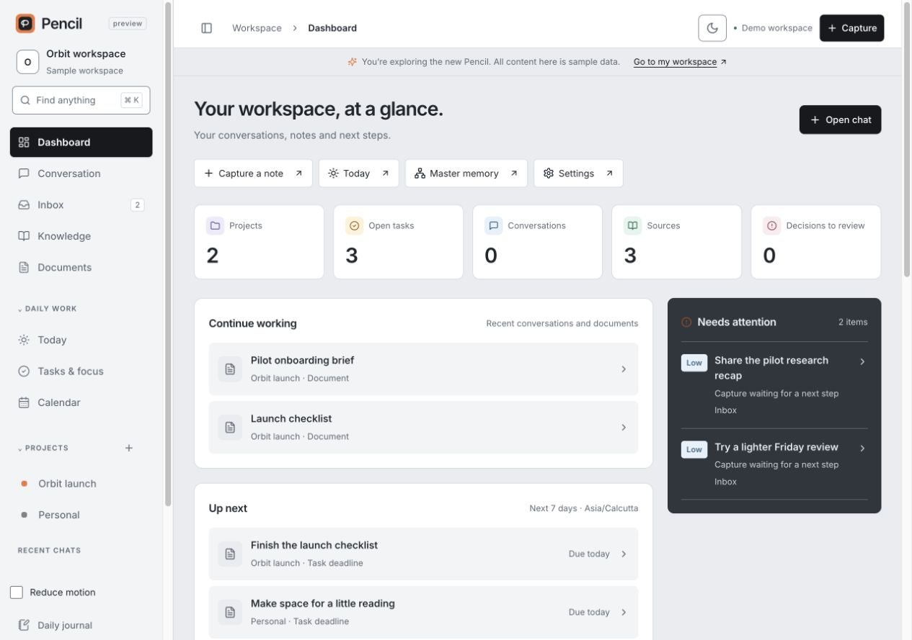

PENCIL / BY LAZO
Your notes, tasks
and time to think
Capture ideas, keep their context and turn the next step into focused work.
Free forever · Mac preview available
A THOUGHT WORTH KEEPING
Start with a smaller launch.
Why?
Learn where people get stuck before opening access.
PENCIL STUDIO
Your workspace, at a glance
A calmer view of your day. Notes, plans and context stay within reach.
See what needs you, what’s next and where you left off.


Explore the Studio demo with sample data. Changes reset on reload. AI answers are examples.
Try Pencil Studio →YOUR LAZO ACCOUNT
Get the current Mac preview
One account gives you access to Pencil and Power Chords.
Pencil 0.9.3 · Build 7 · Apple Silicon
Unsigned preview. macOS may ask for one-time approval.